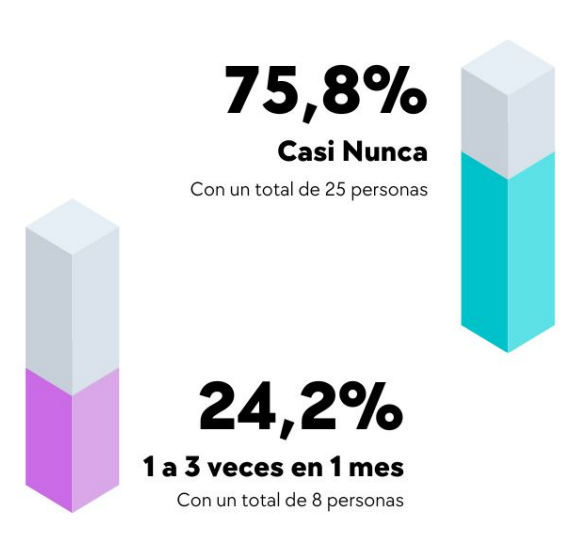

Milestone 1: Investigación y Análisis
Fase inicial del proyecto donde se establecen las bases y se realiza la investigación preliminar
Planteamiento del Problema
En la actualidad, se han identificado varios problemas críticos en el sistema de salud:
- Poca frecuencia de consultas médicas por parte de las personas debido al desconocimiento de los Centros de Salud que cuentan con las especialidades médicas necesarias.
- Dificultad para comparar precios entre diferentes Centros de Salud para las especialidades médicas requeridas y los medicamentos necesarios.
- Largos tiempos de espera para obtener citas con especialistas médicos al hacerlo de forma presencial, lo cual es especialmente problemático para personas que deben trabajar desde tempranas horas.
- Necesidad de madrugar y hacer largas filas para asegurar una cita médica, sin garantía de obtenerla el mismo día.
Impacto en Tiempo
Los pacientes pierden horas valiosas haciendo fila para conseguir citas médicas
Accesibilidad
Limitada información sobre disponibilidad de especialistas y servicios médicos
Eficiencia
Sistema actual genera frustración y pérdida de recursos tanto para pacientes como para centros médicos
Métodos de Investigación
Metodología Aplicada:
- Plataforma de Encuesta: Google Forms distribuido vía WhatsApp
- Entrevistas a stakeholders clave (médicos y personal administrativo)
- Muestreo enfocado en personas entre 20-30 años
- Nivel de confianza: 95% (Z = 1.96)
- Margen de error: 5% (E = 0.05)
Alcance del Estudio:
- Total de Encuestados: 33 personas
- Rango de edad: desde menores de 20 hasta mayores de 50 años
- Tipos de preguntas: abiertas, elección única y de escala
Mapa de Empatía
¿Qué piensa y siente?
- Frustración por las largas filas
- Preocupación por la seguridad de datos personales
- Inseguridad sobre la disponibilidad de citas
¿Qué ve?
- Cupo limitado en centros médicos
- Largas filas de espera
- Horarios poco claros o mal organizados
¿Qué oye?
- Recomendaciones de amigos sobre médicos y centros
- Experiencias en otros países con sistemas más eficientes
- Preocupaciones sobre seguridad de datos personales
¿Qué dice y hace?
- Desea un método fácil de utilizar para sacar turnos
- Valora la calidad de atención médica
- Expresa preocupación por la seguridad de sus datos
Esfuerzos y Resultados
Esfuerzos
- No conocen aplicaciones similares
- Pierden interés por acceso limitado a turnos
- Dificultad para coordinar horarios
Resultados
- Mejor organización de su agenda médica
- Acceso más eficiente a servicios de salud
- Reducción de tiempo perdido en esperas
Métricas Clave de la Investigación
Frecuencia de Consultas
Usuarios buscan consultas médicas 1-2 veces al mes
Satisfacción Actual
Usuarios satisfechos con el proceso actual
Importancia de Acceso
Considera muy importante el acceso rápido a especialistas
Tamaño de Muestra
Personas encuestadas en total
Hallazgos Principales
Preferencias de Usuarios
- Necesidad de sistema fácil de usar
- Importancia de notificaciones y recordatorios
- Preferencia por visualización clara de horarios
Áreas de Mejora
- Optimización del proceso de reserva
- Reducción de tiempos de espera
- Mejor acceso a información de especialistas
Mapa de Recorrido de Usuario
1. Inicio
Acción
El usuario decide buscar una cita médica
Dolor
Incertidumbre sobre el proceso
Oportunidad
Proporcionar información clara desde el inicio
2. Búsqueda
Acción
Buscar información sobre horarios disponibles
Dolor
Información dispersa o poco clara
Oportunidad
Sistema centralizado de información
3. Espera
Acción
Madrugar y hacer fila
Dolor
Largas filas e incertidumbre
Oportunidad
Reserva digital de turnos
4. Confirmación
Acción
Esperar confirmación de la cita
Dolor
Falta de certeza sobre la disponibilidad
Oportunidad
Confirmación inmediata y recordatorios
Conclusiones y Hallazgos
Problemática del acceso a la atención médica
Existe una problemática común relacionada con el acceso a la atención médica, que incluye la dificultad para encontrar médicos, profesionales de la salud y centros médicos, así como la frustración de los pacientes al tratar de agendar citas.
Soluciones tecnológicas
Se ha observado que existen soluciones tecnológicas efectivas como Medicap y Doctoralia que permiten a los usuarios buscar médicos, leer reseñas y agendar citas en línea, ofreciendo una forma eficiente de acceder a la atención médica.
Facilitación de búsqueda
Google Maps desempeña un papel importante al facilitar la búsqueda de ubicaciones de clínicas y centros de salud, reduciendo la incertidumbre de los usuarios y ahorrando tiempo en la localización de servicios médicos.
Tendencia hacia la digitalización
Se observa una tendencia creciente hacia la digitalización de los servicios de atención médica, con aplicaciones y plataformas en línea desempeñando un papel crucial en la forma en que los pacientes buscan atención médica.
Estadísticas
Satisfacción
Satisfechos con el proceso actual
Búsqueda
Buscan consultas 1-2 veces al mes
Importancia
Valoran el acceso rápido a especialistas
Historias de Usuarios y Personas
Personas

Stakeholder: Doctora
"La aplicación debe ser fácil de manejar. Las aplicaciones pueden generar grandes beneficios de comodidad si sirven para asignación o cancelación de citas."

Stakeholder: Recepcionista
"La calidad del profesional y la buena atención del área de salud son aspectos fundamentales."

Usuario Final
"Necesito una aplicación ilustrativa con videos que detallen todo lo necesario para la gente que no entiende mucho de tecnología."
Requisitos Iniciales
Requisitos Funcionales
-
Autenticación de Usuario
El usuario podrá iniciar sesión en el sistema utilizando su nombre de usuario y contraseña.
-
Búsqueda de Medicamentos
El usuario podrá realizar búsquedas de medicamentos en las farmacias más cercanas a su posición.
-
Búsqueda de Especialidades
El usuario podrá realizar búsquedas de especialidades médicas más cercanas a su posición.
-
Gestión de Turnos
El usuario podrá visualizar el horario disponible de turnos médicos de la especialidad que elija y podrá reservar una cita.
Requisitos No Funcionales
-
Usabilidad
El sistema debe ser fácil de usar y comprender para todos los usuarios.
-
Performance
El sistema debe tener buena performance y responder rápidamente a las solicitudes.
-
Seguridad
El sistema debe validar los datos de la persona al registrarse como usuario.
-
Confiabilidad
El sistema debe ser confiable y cumplir con los requisitos del usuario.
Preguntas Clave (HMW)
Optimización de Procesos
- ¿Cómo podríamos optimizar el proceso de agendamiento de citas médicas para reducir la frustración de los pacientes?
- ¿Cómo podríamos garantizar que los pacientes obtengan citas médicas en un tiempo razonable?
Mejora de Experiencia
- ¿Cómo podríamos mejorar la eficiencia de la gestión de citas médicas para minimizar las largas esperas?
- ¿Cómo podríamos utilizar la tecnología para notificar a los pacientes sobre la disponibilidad de citas médicas de manera más efectiva?
Métricas de Éxito
Usabilidad
Objetivo de satisfacción de usuarios
Performance
Tiempo de respuesta objetivo
Disponibilidad
Tiempo de actividad del sistema